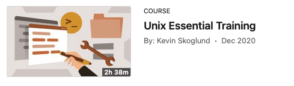

←home
Unix Essential Training

linkedin tutorial
Open All Chapter Folder
(Make this button Toggle!!!)
(Make Images enlarge when active, focus, and maybe hover too)
Chapter 1: Introduction into unix
preferences
whoami
3. Logging in and using the command prompt
4. Command Structure
5. Kernels and Shells
6. Unix Text Editors
Chapter 2: Files and Directories
1. File System Basics
3. Reading Files
4. Creating Directories
5. Moving and Renaming Files and Directories
6. Copying Files and Directories
7. Deleting Files and Directories
8. Creating Symbolic Links
9. Searching for Files and Directories (Using Regex!!)
Chapter 3: Ownerships and Permissions
1. Users and Groups
2. File and Directory Ownership
3. File Direcotry and Permissions
4. Setting Permissions
5. Root, sudo and sudoers
Chapter 4. Commands and Processes
1. Command Basics (PATH)
2. System Information Commands
3. Monitoring Processes
4. Stopping Processes
5. Using the Command History
6. Command History Shortcuts
Chapter 5. Directing Input and Output
1. Directing Output to a File
2. Directing Input from a File
3. Piping output to input (uniq) command
4. Suppressing Output
Chapter 6. Configuring your Enviorment
1. Profile, Login, Resource Files
2. Setting Command Alliases
3. Setting the PATH Variable
4. Customizing the Command Prompt